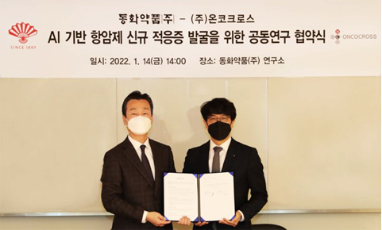
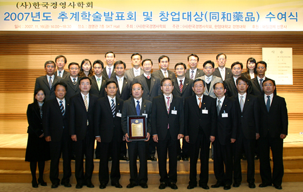
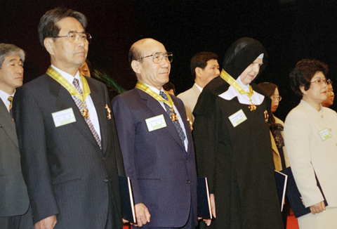
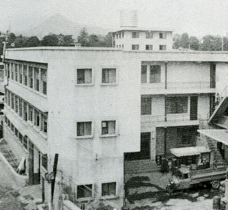
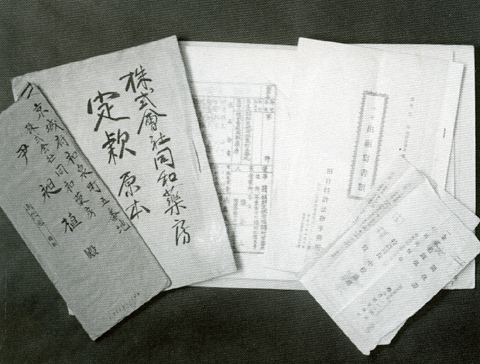

주요연혁
DongHwa 同和
1897년부터 시작된 동화의 역사
2008
- 2022
- 01
동화약품-온코크로스, 항암제 신규 적응증 AI 기반 공동연구
- 03
동화약품, ‘잇치 가글액’ 출시
동화약품-심플렉스, AI 기반 면역질환 치료제 개발 협력 - 04
동화약품, 17대 한종현 사장 취임
- 06
동화약품, 여드름 치료제 ‘세비타비겔’ 출시
- 08
동화약품, ‘2023 가송 예술상’ 공모전 개최
- 09
동화약품-애니머스큐어, 혁신적 근감소증 치료제 개발 위한 공동 연구 협약 체결
- 2021
- 01
동화약품, 뿌리는 비염 치료제 ‘코마키텐 나잘스프레이’ 출시
- 03
동화약품 공생(共生) 광고 시리즈, ‘국민이 선택한 좋은 광고상’ 수상
동화약품, 활명수 123주년 기념판 판매수익금 전액 기부 - 04
동화약품, 저항성 고혈압 치료제 국내 독점 라이센스 계약 체결
- 06
동화약품, 제7회 여름생색 展 개최
- 10
동화약품, 활명수 124주년 기념판 출시
- 12
동화약품 (여행) 광고 - 광고대상 수상
동화약품 ‘후시드 크림’, GS홈쇼핑 5회 연속 완판 기록
- 2020
- 01
동화약품, 영양 균형을 위한 비타민 ‘비라밸’ 출시
- 04
동화약품-제테마, 보툴리눔톡신 치료제 공동개발 위한 업무협약체결
동화약품 DW2008, COVID-19 항바이러스 효과 우수 - 07
동화약품, 피로회복제 ‘알프스B4’ 출시
- 11
COVID-19 치료제 DW2008S 2상 임상시험 식약처 허가
- 12
동화약품 <공생> 광고 - 광고대상 수상
- 2019
- 02
동화약품, 인후염 치료제 ‘모가프텐’ 출시
동화약품 활명, 2019 F/W 뉴욕패션위크 스킨케어 공식 파트너로 참여 - 03
동화약품 활명수(活命水), ‘국민이 선택한 좋은 광고상’ 수상
- 04
동화약품 활명수, ‘올해의 광고상’ 수상
동화약품, 제 16대 박기환 사장 취임
제 4회 윤도준 의학상 강북삼성병원 정신의학과 故 임세원 교수 선정 - 05
동화약품, '2019 미래 행복대상' 식품의약품안전처 처장상 수상
- 09
동화약품 활명수, “오늘도 잘 소화하세요” 캠페인 후속 TV-CF 런칭
- 10
동화약품 스킨케어 르네상스 ‘활명’, 세포라 독점 입점
- 12
동화약품, ‘활명’ 플래그십 스토어 삼청동 오픈
- 2018
- 01
동화약품, ‘동희는 궁금해’ 생활건강 캠페인 전개
- 02
동화약품, 퀴놀론계 항생제 ‘자보란테 정’ 제 19회 대한민국 신약개발상 대상 수상
- 03
2018 가송 예술상 공모전 개최
- 05
동화약품, 2018년 공정거래 자율준수 프로그램(CP) 강화 선포식 개최
- 03
동화약품, 화장품 ‘활명’ 기초 스킨케어라인 출시
- 06
부채표 가송재단-동화약품, 제 6회 ‘여름생색’展 개최
동화약품, 키자니아(Kidzania)에 ‘1897 약국’, ‘응급의학센터’ 체험관 동시 오픈 - 09
부채표 활명수, 마음까지 보살피는 TV-CF 캠페인 런칭
- 10
동화약품 스킨케어 르네상스 ‘활명’, 세포라 독점 입점
- 11
동화약품, 어린이 감기약 ‘판콜아이’ 2종 출시
- 2017
- 01
동화약품 부채표 후시딘, 연 매출 200억 달성
- 03
동화약품, 아주대학교 산학협력단 ‘환자 친화적 구강붕해정 제제 기술 이전 계약’ 체결
까스활명수-큐, ‘한국산업의 브랜드파워(K-BPI)’ 13년 연속 1위 - 08
동화약품X쇼미더머니6, 뮤직비디오 1주일 만에 조회수 141만 건 돌파
- 09
동화약품 치약형 잇몸치료제 ‘잇치', ‘2017 소비자가 뽑은 올해의 브랜드대상’ 선정
동화약품 치약형 잇몸치료제 ‘잇치', ‘2017 소비자가 뽑은 올해의 브랜드대상’ 선정 - 10
동화약품-서울아산병원, 상호 개방형 혁신 통한 R&D 협력강화 MOU 체결
- 11
윤도준 동화약품 대표이사 회장, 제 53회 동암 약의상 수상
- 12
동화약품, 2017 우리사주대상 고용노동부장관상 수상
- 2016
- 01
부채표 후시딘, 서울영상광고제 본상 수상
- 02
동화약품-강스템바이오텍, 줄기세포 배양액 사업화 MOU 체결
- 03
동화약품, 부채표 후시딘 연고 포켓형 신제품 출시
- 04
동화약품, 미인활명수 몽골 수출계약 체결
- 06
동화약품 신제품 액상타입 항히스타민제 ‘플로라딘’ 출시
부채표 가송재단-동화약품, 제 5회 ‘여름생색’ 展 개최
동화약품 종합감기약 판콜에스, 美FDA•DEA 통과-수출 쾌거
동화약품-울산과학기술원 알츠하이머 치매 치료제 연구개발협력 MOU 체결 - 10
동화약품, 어린이용 소화정장제 꼬마활명수 출시
- 2015
- 01
잇몸치료제 ‘잇치’, 연매출 100억 달성!
- 02
신퀴놀론계 항균제 'Zabolante', 보건신기술(NET)인증기술 고시
- 03
까스활명수-큐, '한국산업의 브랜드파워' 11년 연속 1위
- 07
여성을 위한 액제소화제 ‘미인활명수’ 출시
- 11
'자보란테', 2015 대한민국 신약대상 제약부문 머니투데이 회장상 수상
동화약품 활명수, 제3회 대한민국 '제약산업 광고홍보 대상' 광고 부문 최우수상 수상 - 12
'대한민국, 활명수에 살다' 책 출간 안내
- 2014
- 01
난치성 조현병 치료제 '클자핀'정 출시
- 03
까스활명수-큐, 한국산업의 브랜드파워 10년 연속 1위
병ㆍ의원용 화장품 브랜드 '레다' 출시 - 05
건강산업대상 고객만족대상 수상(잇치)
- 06
염증성 장질환 치료제, 경희대학교 기술이전 및 산학협력협약
- 07
부채표 가송재단-동화약품, 제 4회 '여름생색' 展 개최
2014년 가송예술상 시상 - 08
동화약품-보령제약, '피마살탄 패밀리 심포지움' 공동 개최
- 09
동화약품 사보 '1897 times', '한국사보협회장상' 수상
- 12
동화약품, 구강관리 전문 브랜드 '좋은습관' 론칭
- 2013
- 02
'우리 아이를 위한 베스트 브랜드 1위' 2년 연속 수상(후시딘)
- 03
활명수-유니세프 '생명을 살리는 물' 캠페인 전개
- 04
라보라토리신파와 전략적 제휴
- 06
오송신약대상 브랜드 대상 수상(까스활명수)
- 07
동화약품-부채표 가송재단 '제3회 여름생색展' 개최
2013년 가송예술상 시상식 개최 - 09
고혈압 복합제 '라코르 정' 출시
트러블 두피헤어케어 브랜드 '네버세이굿바이' 샴푸,토닉 출시 - 12
'1897 times', 대한민국커뮤니케이션 대상 우수 창간매체 대상 수상
천연물 신약-당뇨병성 신증 치료제 미국 특허 획득
- 2012
- 01
'우리 아이를 위한 베스트 브랜드 1위' 선정(후시딘)
無색소, 無카페인 액상형 진통제 트리스펜 출시
박제화, 대표이사/부회장 취임 - 04
신개념 파스 '미니온플라스타' 출시
- 06
혁신형 제약기업 선정
- 07
2012 가송예술상 시상식 개최
동화약품-부채표 가송재단 '제2회 여름생색 展' 개최
혁신형 제약기업 선정 - 08
판콜비타 출시
- 12
판콜비타 정 출시
- 2011
- 01
무보존제 '까스활명수-큐' 출시
노바티스社와 독점판매 계약(일반의약품 전품목)
기업사랑, 농촌사랑 협약(충북 충주 재오개마을)
잇치 페이스트 발매 - 03
'DW1029M'(신장염 치료제) 캐나다 특허취득
- 05
'비전 120' 선포
- 06
윤도준 회장, 서울대 경영대학 '장수기업 CEO특강' 강연
오송신약대상 공로상 수상 (한경TV-식약청) - 07
동화약품-부채표 가송재단 '제1회 여름생색 展' 개최
- 2010
- 03
기획재정부장관 표창 수상
- 05
연구소 준공(경기도 용인)
- 08
가송 윤광열 명예회장 서거(2010년 8월 26일, 享年 87세)
- 10
윤도준 회장, 한국외대 대학원 정보기록학과 10주년기념 국제컨퍼런스 강연 (주제: 역사가 마음을 움직인다)
- 12
판토프라졸 EU GMP 승인
- 2009
- 02
대한민국 신약개발상 기술수출상 수상
- 03
석탑산업훈장 수훈
- 05
발명대왕상 수상(특허청)
cGMP공장 준공(충청북도 충주시)
'동화약품 주식회사'로 상호변경 - 10
윤도준 회장, 기업가정신 국제컨퍼런스 기조연설 (주제: 장수기업과 기업가정신)
- 11
대한민국광고대상 금상(후시딘), 우수상(까스활명수)
적십자회원유공상 은장 수상 - 12
'활명수 100년 성장의 비밀' 출간
- 2008
- 01
윤도준, 대표이사/회장 취임\
퍼스트브랜드 대상 수상(까스활명수-큐, 후시딘, 판콜) - 02
조창수, 12대 사장 취임
- 04
DW1350, 신약기술 수출(일본 데이진社)
- 05
재단법인 가송재단 설립
- 10
광주지점 신축사옥 준공
CI 리뉴얼 - 12
연세 경영대학 기업윤리대상 수상
대한민국기술대상 동상 수상(지식경제부)
1997
- 2007
- 02
DW224a, 신약기술 수출(美 Pacific Beach Biosciences)
- 03
DW1350, 신약기술 수출 (국내제약 최대규모, 美 P&G Pharmaceutical,Ind)
- 04
신약기술개발대상 수상(대한약학회)
- 05
창업대상 수상(한국경영사학회)
- 07
보건산업기술대전 대통령상 수상 (보건복지부)
- 09
세종대왕상 수상(특허청, 특허기술 최고상)
- 2006
- 03
GMP차등평가 최상위등급 판정(식품의약품안전청)
- 06
윤도준 부회장, 한국능률협회 세미나 강연
- 07
여성소비자가 뽑은 최고명품브랜드 대상(후시딘)
- 2005
- 02
'이세탁스 페이스트' 발매
- 07
윤도준, 부회장 취임
- 08
건강기능식품 브랜드 '동화 Healthdaily' 출범
- 10
100대 브랜드 선정(까스활명수-큐, 브랜드스톡)
- 2004
- 02
보건복지부장관상 수상
- 04
한국산업 브랜드파워 1위 선정(한국능률협회)
- 06
국내 대표 브랜드 선정(까스활명수-큐, 한국경제신문)
- 07
뇌졸중치료제 개발을 위한 공동연구계약 체결
- 09
서울광고대상 우수상 수상(까스활명수-큐)
- 10
DW1350(골다공증치료제) 용도 특허
- 2003
- 01
윤길준, 11대 사장 취임
- 02
브랜드파워 1위 인증(까스활명수-큐, 한국능률협회 컨설팅)
- 03
동암 약의상 수상 (약업신문)
- 05
과학의 날, 과학기술 포장 수훈(과학기술부)
- 06
동탑산업훈장 수훈(산자부 신기술 실용화촉진대회)
- 09
대한민국 경영인상 수상(서울신문)
- 2002
- 02
대한민국 10대 신기술상 수상(밀리칸주, 산업자원부)
- 03
대한민국 신약개발대상(밀리칸주, 한국신약개발연구조합)
- 06
BGMP적합업소 지정
- 07
톱 브랜드 인증패 수상(까스활명수-큐, 세계일보)
- 08
도서 '윤리경영이 경쟁력이다'에 동화약품 소개
- 09
전경련 산업협력대상 국무총리표창 수상
- 01
KGSP적격업소 지정
- 04
밀리칸주 KFDA시판 승인 (세계최초 간암치료용 방사성의약품)
- 06
다산기술상 대상 수상(한국경제신문)
- 08
경기 환경 그린 대상 수상(경기도)
- 2000
- 04
경제정의기업상 수상(경제정의연구소 및 한겨례신문)
- 06
유럽의약품품질심의회 인증(EDQM)
- 08
경향베스트장수상품 선정(까스활명수-큐)
- 1999
- 07
글로벌 소비자선호대상 수상(까스활명수-큐, 후시딘)
- 1998
- 08
세계최초 피부암치료제 상품화 착수(밀리칸 필름)
동화약품 백년사 발간
- 1997
- 02
창립 100주년
- 04
DW116(항균제), DW166HC 국내 임상돌입
- 06
조세의 날, 모범납세업체 표창(국세청)
1977
- 1996
황규언, 10대 사장 취임
한국 기네스북 4개부문 등재
DW166HC(간암치료제) 한국원자력 연구소와 공동개발 및 독점실시권 계약
- 1995
보건의 날, 국민훈장 모란장 수훈
덴마크 헨릭공 명예훈장 및 기업연합회 상패 수훈
약의 상 수상(약업신문사)
서울연통부 기념비 본사 설치
환경관리 모범업소 선정(환경부)
- 1994
과기처 장관상 IR52 장영실상 수상(염산암브록솔 합성)
대한민국광고대상 의약품부문 작품상(의약품 부문-활원)
서울시 정도600년 기념 타임캡슐 매설(후시딘연고, 홈매트)
최우량기업 선정(한국능률협회)
- 1993
최우수기업상 수상(한국능률협회)
프랑스 트랜스피토社와 독점판매 계약(루복 발매)
의료사업부 신설
일본 사또社와 독점판매 계약(칼신츄정 발매)
- 1992
식품라인 설치, 식품드링크 시장 진출
- 1991
전제형 KGMP적격업소 지정
액제라인 초고속자동화 및 로보트화
- 1990
중앙연구소 동물실험실 증축
프랑스 쥬베날社와 기술제휴(유로비올 발매)
- 1989
프랑스 트랜스피토社와 기술제휴(메라롭정 발매)
- 1988
조세의 날, 철탑산업훈장 수훈
프랑스 락테올社와 기술제휴(락테올 발매)
서울올림픽 조직위원장 감사장 수상(대회협조, 지원공헌)
- 1987
전산실 확장 개관
수해복구 지원
항히스타민제 테르페나딘 합성(국내 최초)
일본 데이진社와 독점판매 계약(아프타치첩부정 발매)
KGMP적격업소 지정
- 1986
병역특례연구기관 지정(중앙연구소)
상공부장관상 수상(우리상표 전시회)
- 1985
조세의 날, 대통령표창 수상
안양공장 KGMP동 준공
일본 산쿄社와 기술제휴(세프메타존 발매)
이태리 메나리니社와 기술제휴(메녹틸 발매)
- 1984
한국 산도스주식회사 설립
이태리 크리노스社와 기술제휴(글라이드 발매)
일본 마루이시社와 독점판매 계약(스테리하이드액 발매)
국무총리 표창장 수상(수출산업발전 및 시장개척의 공로)
- 1983
상공부장관상 수상(수출유공 포상)
- 1982
보사부장관상 수상(기술혁신 및 수출유공 포상)
프랑스 에치팜덱소社와 기술제휴(헬민 발매)
산도스한국지점 개설
- 1981
반합성 페니실린계 항생제 생산시설 증설
- 1980
상공부장관상 수상(특허품 개발 및 수출유공 포상)
덴마크 레오社와 기술제휴(후시딘연고 발매)
사원복지센터 설립
- 1979
원료합성 제2공장 증축
노동청장상 수상
보사부장관상 수상
테네브라' 발매
로슈社와 '메로드'분쟁의 건 승소
- 1978
국내 최초 전 사원 월급제 실시
주사제 제조시설 완공
- 1977
가송 윤광열, 회장 취임
미국 마리온社와 기술제휴(실마딘 발매)
1958
- 1976
공모증자로 주식공개
종업원지주제 실시
덴마크 레오社와 독점판매 계약(부리넥스 발매)
보당 윤창식사장 동상 제막식
- 1975
노동조합 설립
- 1974
가송 윤광열, 부회장 취임
제1회 주주총회 개최
김홍기, 8대 사장 취임
조세의 날, 동탑산업훈장 수훈
PM제도 도입
- 1973
가송 윤광열, 7대 사장 취임
국내 최초 희귀약품센터 설치
중앙연구소 설립
- 1972
안양공장 준공
메토클로프라미드, 트리메토프림 합성 특허취득
스위스 산도스社와 기술제휴(타베질, 메덜진, 옵타리돈 발매)
- 1971
현대유리공업주식회사(現 동화지엔피주식회사) 인수
원료 합성실 신설
- 1970
인천출장소 개설
성실신고 법인선정
- 1969
부산 외 6개 지점에 출장소 설치
- 1968
'알프스디', '알파활명수', '판콜에이' 발매
- 1967
'까스활명수' 발매
봉황대상 수상(활명수)
- 1966
민강 사장, 국립 서울현충원 애국지사묘역 안장
- 1965
본사 및 제2공장 준공
- 1964
일본 모리모또산업 기술제휴
제1공장 신축공사
- 1963
윤화열, 6대 사장 취임
보당 윤창식 사장 서거(1963년 3월 13일, 享年 74세)
초대사장 민강, 건국훈장 독립장 수훈
- 1962
'동화약품 공업주식회사'로 상호변경
1897
- 1957
'코후나민 시럽' 외 11종 발매
- 1949
가송 윤광열, 주식회사 동화약방 입사
- 1946
윤창식 사장, 대한독립촉성국민회 중앙위원 상공계 대표
- 1945
가송 윤광열, 광복군 주호지대 5중대장
- 1942
분공장 설립(만주 안동)
- 1939
사규 제정
- 1938
만주국 안동지점 설치
국내최초 여약사 장금산, 관리약사 임명 (만주 안동지점장 역임)
- 1937
보당 윤창식, 5대 사장 취임(동화약방 인수)
'부채표 활명수' 만주국 상표출원(국내최초 해외상표등록)
- 1931
'주식회사 동화약방'으로 상호변경
- 1927
보당 윤창식, 신간회(항일민족단체) 활동
- 1922
보당 윤창식, 보린회(빈민구휼사업) 활동
- 1919
'활명액' 상표등록(국내 최초 유사상표 방어용)
동화약방, 서울연통부 거점 역할
- 1917
화장품 '이화분', '도화분' 발매
- 1915
소의학교 후원(조선물산공진회 경품판매 이익금 전액기부)
보당 윤창식, 조선산직장려계(항일비밀결사단체) 결성, 총무역임
- 1912
근하신년 전면광고(매일신보)
화장품 '동화백분', '옥용수', '위생유' 신문광고
- 1910
'부채표' 상표등록
대한민국 최초 영업규례 제정 실시
- 1909
민강, 대동청년당(항일단체) 결성
'환약' 상품명 특허등록(통감부 특허국 제295호)
- 1908
'활명수'등 98종 허가 획득(위생국)
- 1907
민강, 소의학교 설립
- 1906
민강, 조선약학교(現 서울대 약학대) 설립
- 1897
궁중 선전관 노천 민병호, 대한민국 최초 신약 '활명수' 개발
민강, '동화약방' 창업 위치: 한성부 서소문 차동(현 서울특별시 중구 순화동 5번지)